보는 AI 4편: 움직임을 알아보는 AI¶
보는 AI · 4편. 그림으로 보는 소리·움직임 AI 시리즈예요. 0편부터 읽기
3편 「움직임을 보다」에서 스윙의 진동이 그림이 됐어요. 이번엔 그런 그림으로 AI가 동작을 알아보게 가르쳐요. 30명의 실제 폰 데이터를 썼고, 아래 숫자는 모두 직접 학습시킨 결과예요.
그림 8장 · 수식 없음 · 진짜 학습 결과 · 마지막에 게임 · 10분 정도
그림 1 · 재료: 여섯 가지 동작을 담은 조각 1만 개¶
UCI HAR라는 공개 자료를 써요. 30명이 허리에 폰을 차고 걷기, 계단 오르기, 계단 내려가기, 앉기, 서기, 눕기를 했어요. 폰 속 IMU가 1초에 50번씩 쟀고, 기록을 2.56초짜리 조각으로 잘라 조각마다 이름표를 붙였어요.
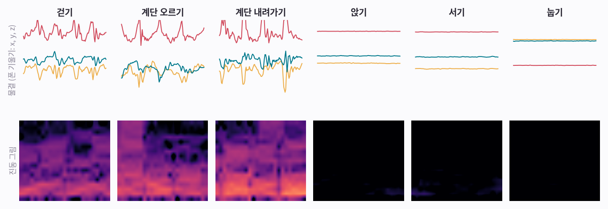
그림 보는 법
- 위 줄: 폰이 기울어진 정도를 물결 세 개(x, y, z)로 그렸어요.
- 아래 줄: 몸이 흔들린 크기를 진동 그림으로 그렸어요. 1편과 같은 방법이에요.
- 걷기와 계단 두 가지는 진동 그림이 환하게 켜져요. 앉기, 서기, 눕기는 거의 까매요. 흔들림이 거의 없어서, 구별할 단서는 위쪽 기울기뿐이에요.
한 줄 정리
움직임 AI도 이름표 붙은 조각으로 배워요. 2편의 소리 조각과 같은 원리예요.
이걸 전부 공부에 쓰면 될까요? 아니에요. 이번엔 나누는 방법이 더 중요해요.
그림 2 · 사람 기준으로 나눠요: 21명으로 공부, 처음 보는 9명으로 시험¶
사람마다 걷는 습관이 조금씩 달라요. 같은 사람이 공부용과 시험용에 다 들어 있으면, AI가 동작이 아니라 그 사람의 습관을 알아볼 수 있어요. 그래서 시험은 AI가 한 번도 못 본 사람으로 봐요.
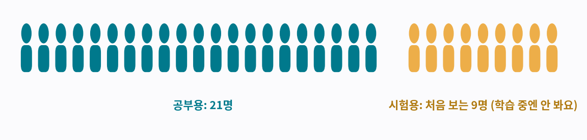
그림 보는 법
- 청록: 21명, 공부용 조각 7,352개
- 노랑: 다른 9명, 시험에만 쓰는 조각 2,947개
한 줄 정리
움직임 AI는 처음 보는 사람으로 시험해야 공정해요.
이제 조각마다 그림으로 바꿔요.
그림 3 · 조각 하나가 진동 그림 9장이 돼요¶
폰 속 IMU는 신호 6개를 줘요. 세 방향의 흔들림과 세 방향의 회전이에요. 흔들림을 다시 몸이 움직인 부분과 중력(폰이 기운 방향) 부분으로 나누면 모두 9개가 돼요. 신호마다 진동 그림을 한 장씩 만들어요.
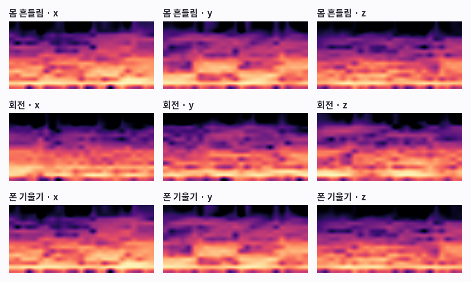
그림 보는 법
- 걷기 조각 하나예요. 걸음마다 같은 모양이 되풀이돼서, 그림마다 규칙적인 밝은 띠가 보여요.
- 9장을 사진의 색 층처럼 겹쳐서, AI가 한꺼번에 봐요.
한 줄 정리
소리 AI가 소리 그림 1장을 봤다면, 움직임 AI는 진동 그림 9장을 한꺼번에 봐요.
이제 막 만든 AI에게 이 그림을 보여 줄게요.
그림 4 · 처음 AI는 아무것도 몰라요¶
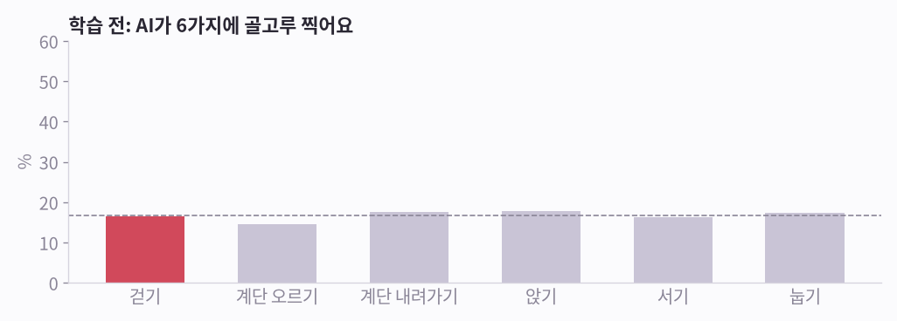
그림 보는 법
- 막대 6개는 걷기 조각 하나를 보고 AI가 각 동작에 건 확률이에요. 모두 점선(6개 중 1개) 근처예요.
- 시험 조각 2,947개를 풀게 했더니 17%를 맞혔어요. 6개 중 하나를 찍으면 17%예요.
한 줄 정리
학습 전 AI는 그냥 찍어요. 2편에서 본 것과 같아요.
그리고 똑같이 배워요. 맞혀 보고, 채점하고, 조금 고치기.
그림 5 · 몇 초 만에 배워요¶
학습 방법은 2편 「소리를 알아듣는 AI」와 똑같아요. 조각이 작아서 40회 공부가 RTX 3090으로 9초쯤 걸렸어요.
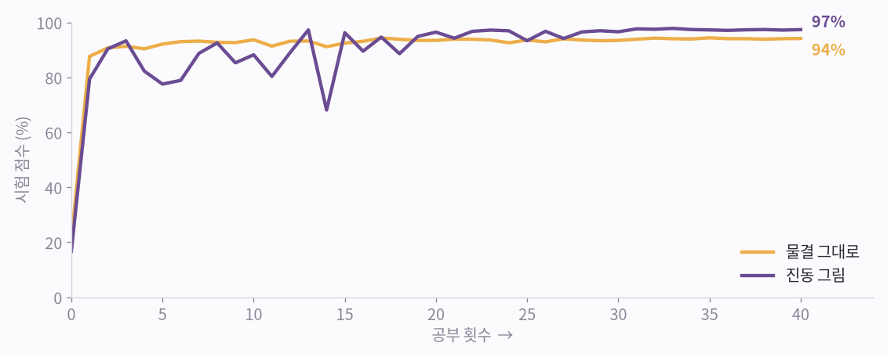
그림 보는 법
- 노랑: 물결을 그대로 공부한 AI예요. 처음 보는 9명에게서 94%로 끝났어요.
- 보라: 진동 그림으로 공부한 AI예요. 처음엔 오르락내리락하다가 97%로 끝났어요.
한 줄 정리
이번 실험에서는 소리처럼 움직임도 그림으로 바꿔 보여 준 쪽이 더 잘 배웠어요.
그래도 헷갈리는 동작이 있을까요?
그림 6 · 헷갈리는 짝: 앉기와 서기¶
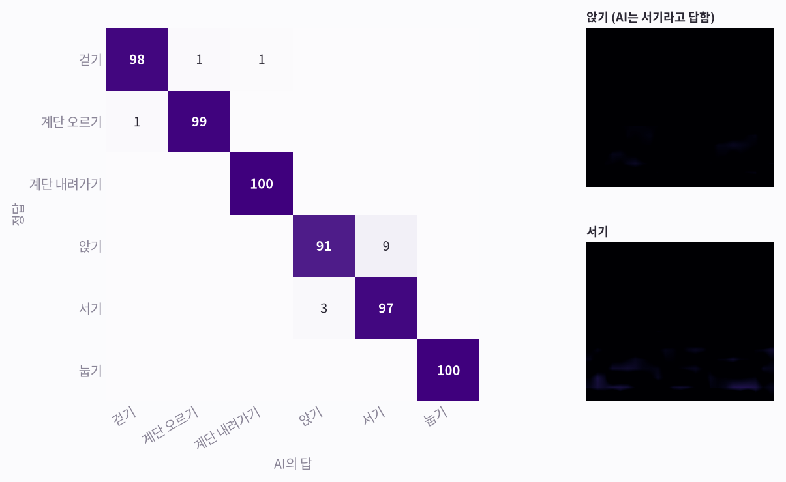
그림 보는 법
- 가로줄은 정답, 세로줄은 AI의 답이고, 숫자는 %예요. 대각선의 진한 칸이 맞힌 거예요. 예를 들어 ‘앉기’ 줄은 정답이 앉기일 때 AI가 뭐라고 답했는지예요. 91은 맞혔고, 9는 서기라고 했어요.
- 걷기, 계단, 눕기는 거의 다 맞혀요.
- 가장 많이 틀린 건 앉기를 서기로 본 경우예요. 둘 다 가만히 있어서 진동 그림이 거의 까맣고, 허리의 폰도 거의 같은 각도로 기울어 있거든요.
- 오른쪽: AI가 서기라고 답한 앉기 조각과, 평범한 서기 조각의 진동 그림이에요. 둘 다 거의 까매서 그림만으로는 구별하기 어려워요. 이 둘은 5편 「레퍼런스만 주면 알아보는 AI」 그림 7에서 다시 나와요.
한 줄 정리
두 동작이 같은 진동 그림을 만들면 좋은 AI도 헷갈려요. 센서를 어디에 두느냐가 중요해요.
실험 하나 더. 나누는 방법이 공정하지 않았다면?
그림 7 · 불공정한 시험은 점수를 부풀려요¶
물결 AI를 다시 학습시키되, 이번엔 사람을 다 섞은 뒤 나눴어요. 같은 사람이 공부용과 시험용에 다 들어갔어요.
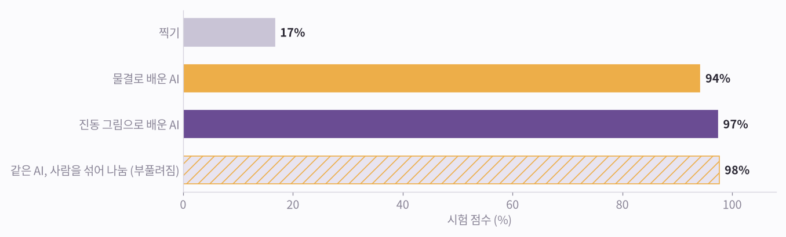
그림 보는 법
- 찍기 17%. 처음 보는 사람에게 물결 AI 94%, 진동 그림 AI 97%.
- 같은 물결 AI를 사람을 섞어 나눠 시험하면 98%예요. 정직한 점수보다 3.5점 높아요. 같은 사람의 조각, 그것도 시간이 절반씩 겹치는 이웃 조각까지 양쪽에 들어가서 문제를 미리 본 셈이 됐거든요.
한 줄 정리
시험은 꼭 처음 보는 사람으로. 아니면 AI가 실제보다 잘해 보여요.
마지막으로, 골프 센서 장갑에 이 방법을 쓰려면 무엇이 필요한지 볼게요.
그림 8 · 다시 골프 장갑으로¶
센서 장갑에도 같은 방법을 써요. 스윙마다 소리 그림과 진동 그림을 한 장으로 붙이고, 이름표를 달아 AI를 가르쳐요.
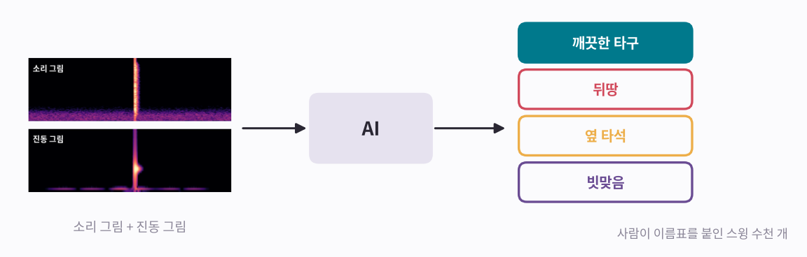
그림 보는 법
- 필요한 것: 여러 골퍼의 스윙 수천 개, 그리고 사람이 하나하나 붙인 이름표(깨끗한 타구, 뒤땅, 옆 타석, 빗맞음)
- 시험은 AI가 처음 보는 골퍼로 봐야 해요. 바로 앞 그림의 이유예요.
- 센서 위치도 중요해요. 거의 안 움직이는 곳에 있는 센서는, 그곳에서 똑같이 느껴지는 두 스윙을 구별하지 못해요. 허리의 폰이 앉기와 서기를 헷갈린 것처럼요.
- 소리와 움직임을 함께 보는 ‘눈’, 그리고 학습 없이 레퍼런스만으로 새 동작을 알아보는 방법은 5편 「레퍼런스만 주면 알아보는 AI」에서 이어져요.
한 줄 정리
소리 AI와 움직임 AI는 같은 방법으로 배워요. 달라지는 건 보여 주는 그림이에요.
이제 직접 진동 그림을 읽어 볼 차례예요.
어떤 동작일까요?¶
카드는 모두 처음 보는 사람의 시험 조각이에요. 위는 기울기 물결, 아래는 진동 그림이에요. 동작을 고른 뒤 확인해 보세요.
1번
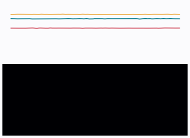
정답 보기
눕기
2번
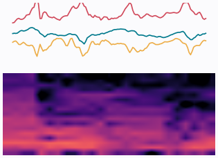
정답 보기
계단 오르기
3번
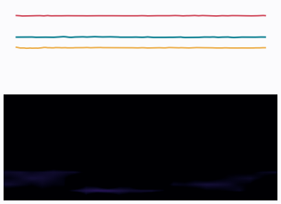
정답 보기
앉기
4번
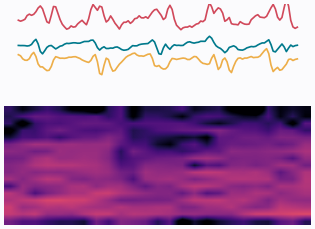
정답 보기
걷기
5번
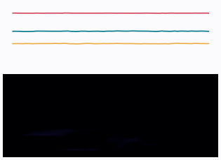
정답 보기
서기
6번
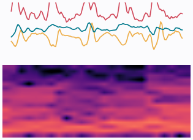
정답 보기
계단 내려가기
다섯 줄 정리¶
- 이름표 붙은 움직임 조각을 모아요.
- 조각마다 진동 그림으로 바꿔요. 소리와 같은 방법이에요.
- 일부 사람으로 공부하고, AI가 처음 보는 사람으로 시험해요.
- 맞혀 보기, 채점, 조금 고치기를 많이 반복해요. 작은 AI는 몇 초면 배워요.
- 센서 자리에서 똑같이 느껴지는 동작은 끝까지 어려워요. 센서를 잘 두세요.
시리즈 · ← 3편, 움직임을 보다 · 5편, 레퍼런스만 주면 알아보는 AI →
출처와 표기¶
데이터: UCI HAR, Anguita, Ghio, Oneto, Parra, Reyes-Ortiz (2013), “A Public Domain Dataset for Human Activity Recognition Using Smartphones”, ESANN, CC BY 4.0. 학습은 RTX 3090 한 대에서 실행했어요. 골프 그림은 설명용이고, 골프 데이터로 학습하지는 않았어요. NVIDIA·GeForce RTX는 NVIDIA Corporation의 상표이며, 지칭 목적으로만 사용했습니다.
용어 설명¶
- 동작 알아보기: 인간 활동 인식(HAR)
- 사람 기준으로 나누기: 피험자 단위 분할(leave-subjects-out)
- 같은 사람이 섞인 불공정한 시험: 데이터 누수(data leakage)
- 진동 그림 9장: 다채널 스펙트로그램 입력
- 물결 AI / 그림 AI: 원신호 1-D CNN / 스펙트로그램 2-D CNN
- 헷갈림 표: 혼동 행렬(confusion matrix)